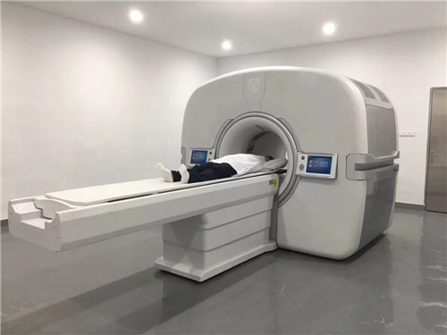

■ 通讯员 杨亚
7月31日，在第五届中国“互联网+”大学生创新创业大赛湖北省复赛中，我校师生共创组“全球首创的全数字PET系统及产业化” 过关斩将、获得主赛道排位赛最高分！包括“数字PET”项目在内，我校共6个项目晋级全国总决赛，晋级项目总数并列全省第一。10月上旬，这6个项目将赴浙江大学冲击全国总决赛。今年5月31日，由数字PET发明人、我校教授谢庆国与博士生张博带领团队研发的临床全数字PET/CT通过CFDA注册审批，获得市场准入和对外销售的资质。
将全部青春献给了数字PET事业
“我从05年大学一年级认识谢庆国教授，那个时候我才19岁，谢教授33岁（跟我今天一样），到今天14年了。我们从研究走向创业，全部的青春都奉献给了数字PET。”复赛演讲中，当张博讲到这里，全场响起热烈的掌声，这也是当天所有项目中唯一一次全场自发的鼓掌。
19年前，青年学者谢庆国选择了PET作为他的研究方向，2004年，谢庆国发明了数字PET技术，同年，张博来到华中科技大学就读本科，并在2005年加入了谢老师的研发队伍。从本科到硕士，7年时间里，张博见证了数字PET从原理发明一步步转化成技术、产品的艰辛历程。
“记得谢老师刚刚提出数字PET概念时，业内的接受度并不高，但他却笃信这个全新技术的巨大潜力，坚持不懈地在数字PET这片无人区耕耘。正是凭着这股轴劲，数字PET开始陆续产出一系列成果。渐渐地，国际医疗器械巨头也看到了数字PET的价值和潜力，2009年，西门子开始提出数字化方法，2010年，飞利浦也跟着提出了它的数字化技术。如今在PET厂商中，忽如一夜春风来，满城都是‘全数字’。这让我明白了一个道理：在追求真理的道路上，只要看准了、认定了，坚持不懈地去追求了，就一定能守得云开见月明！”
在华科的7年求学时光，也让张博渐渐成长为谢庆国的得意门生。硕士毕业后，张博凭着出色的能力被一家公司高薪聘请为技术总监。“正好那时也想去看看外面的世界，不过，干了一段时间后，总觉得缺了点什么。”
2014年，正在筹备临床PET产业化的谢庆国找到张博：“你是想干一份一眼可以望到老的工作，还是愿意拥有一个挑战与机遇并存的终身事业？”对于张博来说，数字PET是十几年来死磕出来的硬科技，具有巨大的技术潜力和应用价值。“原来我缺少的，正是一种为某种事业奉献一生的归属感。数字PET是真正可以改变世界、为人类造福的事业，这，不正是我一直在寻求的可以给我归属感的终身事业吗？”正是抱着这样的想法，张博放弃了高薪职位，义无反顾地加入进来。
“创业永远是一条最艰辛的道路！”回忆起14年来跟随导师投入到数字PET事业中的点点滴滴，张博感慨万千。刚开始没有场地，大家只能在学校角落的一个废弃实验室落脚。四十平米的场地，十来个人挤在一起，组装原型机时，为腾出空间，每张桌子都得来来回回挪动；最困难的时候，因为发不出工资，张博甚至以个人名义找银行借了信用贷款，给兄弟们发生活费。
“努力终于没有白费！早一点做出全数字PET，中国高端医疗器械就能早一点迎来逆袭、更能早一点挽救更多生命。”对于张博来说，14年的全部青春只是一个起点，人生的下半段，还将为数字PET造福人类健康不懈奋斗。
19年只做一件事：实现国产高端医疗器械的逆袭
PET是目前最贵的医学影像手段之一，不同于常见的CT和MRI的解剖影像，PET能在很多疾病的病灶还没形成之前，就可以通过诊断生物化学反应的异常，实现对病灶的早期发现。
PET主要面向人类健康的三大杀手：肿瘤、心血管和神经系统疾病。然而，这一装备却是目前国产化占比最低的高端医疗器械；同时，现有的PET也由于性能不足、应用难而没有充分满足临床诊断的需要。
张博介绍，数字PET团队在过去19年，一直致力于解决PET研发中最关键的数字化问题。谢庆国教授发明的MVT数字化方法，开辟了一条全新的PET技术路线，不仅解决了受制于人的重大技术瓶颈问题，还进一步提升了PET的性能。
“中国是目前全球最大癌症发病率和死亡率国家，中国人需要有自己的高端医疗仪器，而不是将健康寄托在进口仪器上。我们19年只做一件事，并且以后都将致力于这件事，就是将数字PET打造成国产高端医疗器械实现逆袭的突破口！”张博认为，这正是数字PET项目能够拿到这次复赛冠军的重要原因之一。

中国“互联网+”大学生创新创业大赛是我国深化创新创业教育改革的重要载体和平台，自2015年创办以来，前四届累计有逾500万大学生、120万个项目团队参赛，涌现出一大批科技含量高、市场潜力大、社会效益好的高质量项目，已经成为我国覆盖面最大、影响最广的大学生创新创业盛会。